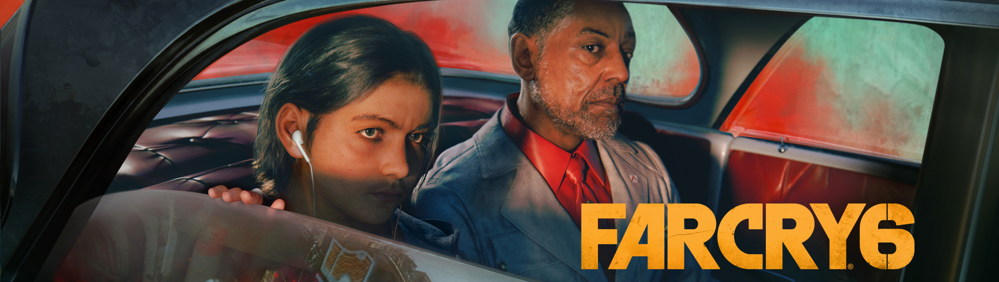
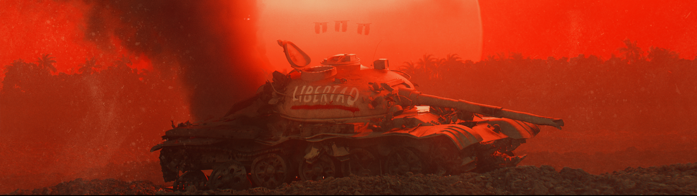
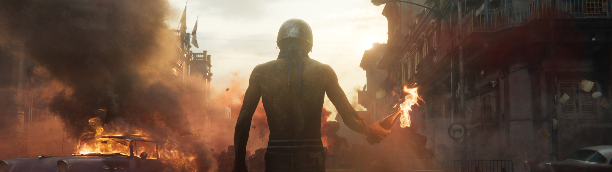

Un dicho muy común sobre la ficción es que la calidad de una historia y la grandeza de un héroe se miden por su villano, algo que podríamos aplicar perfectamente a los videojuegos. A fin de cuentas, personajes como Andrew Ryan, GlaDOS, Kefka o Jack el Guapo engrandecieron la leyenda de sus correspondientes títulos hasta niveles insospechados, e incluso iconos de la industria como Mario y Sonic no serían lo mismo sin sus eternos escarceos contra Bowser y Robotnik.
Si hay algo que tenemos muy claro es que la industria del ocio electrónico tiene infinidad de grandes enemigos y rivales que, ya sea por un motivo u otro, han hecho mejores a sus juegos. Probablemente, uno de los ejemplos más ilustrativos de todo esto lo tengamos en la saga Far Cry, una serie que lleva dando una importancia capital a la figura de sus villanos desde su tercera entrega, hasta el punto de ser quienes protagonizan sus portadas y la mayoría de sus materiales promocionales.
Vaas, Pagan Min y Joseph Seed desprendieron carisma por los cuatro costados y supieron cómo ponernos contra las cuerdas en numerosas ocasiones, pero con Far Cry 6 Ubisoft ha querido ir un paso más allá y contratar al talentoso actor Giancarlo Esposito (Breaking Bad, The Mandalorian) para dar vida a nuestro próximo gran rival a batir en una ambiciosa entrega que sigue a pies juntillas la fórmula habitual de la saga y que lo apuesta todo al lema de "más grande y mejor".
Así pues, volvemos a encontrarnos ante una aventura de acción en primera persona y mundo abierto que nos llevará hasta Yara, una nación ficticia del Caribe que se encuentra sometida a la cruel y despiadada dictadura de El Presidente Antón Castillo. Como no podía ser de otro modo, nosotros interpretaremos a Dani Rojas, una chica (o chico, ya que podemos escoger su sexo al inicio de la partida) que por diversos motivos acaba convirtiéndose en una guerrillera y uniéndose a un movimiento revolucionario para liberar al país, dándonos así la excusa perfecta para emprender todo tipo de misiones y actividades en pos de la libertad.
El guion como tal es bastante simple y al igual que ocurre con la mayoría de juegos de Ubisoft intenta abordar temas muy interesantes, complejos y delicados, aunque nunca llega a ahondar de verdad en ellos, limitándose a plantearlos sobre la mesa (y no siempre con acierto) mientras nos muestra las diferentes caras de esta caótica revolución.
Por supuesto, Antón Castillo es la auténtica estrella de la función, una figura imponente, bien construida y con las ideas tan claras que nos pondrá los pelos de punta en más de una ocasión con su terrible forma de pensar y razonar, pues no dudará en sacrificar hasta el último yarano con tal de alcanzar sus objetivos y acabar con todo aquel que se atreva a oponerse a su gobierno. En líneas generales, es un villano muchísimo más serio y menos extravagante que los de entregas anteriores, lo que no quita que también tenga ese punto de locura del que hacen gala todos los antagonistas de la serie, solo que reflejado de otra manera mucho más espeluznante por lo real y reconocible que es, lo que le da un toque muy especial y único. Aquí también queremos destacar el llamativo contrapunto que le da su hijo Diego, a quien veremos dudar de las crueles y despiadadas acciones de su padre al mismo tiempo que sigue una evolución muy interesante y coherente a medida que la historia se va desarrollando.
Tal y como dijimos anteriormente, en lo jugable estamos ante una secuela extremadamente continuista que rara vez busca salirse de los cánones establecidos. De esta manera, deberemos explorar un mapa de tamaño considerable, conquistar bases y puntos de control, mejorar nuestro equipo, conducir vehículos, participar en minijuegos y completar un buen puñado de misiones, ya sean principales o secundarias. Y, por supuesto, todo ello mientras hacemos gala de nuestras habilidades de sigilo o pegamos tiros a diestro y siniestro para desatar el caos allá por donde pasemos.
Si habéis jugado a cualquiera de sus últimas entregas, sabréis qué es exactamente lo que os vais a encontrar aquí, pues se trata de un Far Cry hasta la médula, tanto para lo bueno como para lo malo. No vamos a entrar a valorar si la fórmula está agotada o no, pero si algo nos ha quedado claro tras vivir decenas de horas de aventuras en Yara es que a nosotros nos sigue divirtiendo muchísimo. No en vano, estamos hablando de un juego con un gunplay bastante bueno, unas misiones que sin ser el colmo de la originalidad están bien diseñadas y saben ser variadas, unas actividades opcionales más cuidadas de lo habitual, un sistema de progresión bien medido y un mapa que consigue hacer que la exploración merezca la pena.
En relación a este último punto nos vemos obligados a destacar lo muchísimo que nos ha gustado Yara, probablemente una de las regiones que más hemos disfrutado de toda la saga. No solo es una auténtica delicia en lo artístico con sus bellísimos parajes naturales y el ambiente latino que lo impregna todo, sino que también cumple con creces en su función de ofrecernos un entorno de juego divertido y satisfactorio por el que da gusto perderse. Hay montones de secretos esperando a ser descubiertos, los escenarios favorecen que se produzcan todo tipo de situaciones y que tengamos que hacer mano de todos nuestros recursos para movernos por ellos, y la forma en la que todo se abre ante nosotros está muy bien estudiada para que sea progresiva y tengamos la suficiente libertad como para marcar nuestro camino.
Es más, aquí no hay torres que coronar y si queremos descubrir las ubicaciones de los puntos de interés nos tocará explorar y participar en otras actividades que nos puedan dar las pistas que necesitamos para encontrar una misión secundaria, una caza del tesoro, una base que debe ser conquistada, etcétera.
Otro detalle que conviene destacar es que Yara está dividida en cuatro grandes regiones. Las tres primeras están gobernadas por los principales cabecillas del régimen de Antón Castillo y las podremos explorar en el orden que queramos para completar sus arcos argumentales. Evidentemente, los niveles de los enemigos irán subiendo en todo el mundo a medida que avancemos en la trama principal y no será hasta que hayamos conquistado todas las zonas cuando nos darán la oportunidad de ir a la mismísima capital de la nación para acabar con el tirano.
Far Cry 6 es un juego que no engaña a nadie y que da justo lo que promete: más Far Cry. Si os gusta la fórmula de la serie y os atrae su nueva ambientación, estamos convencidos de que os lo vais a pasar en grande con él, pues sigue siendo una experiencia muy divertida y bien diseñada que sabe cómo atrapar y sacarle partido a sus puntos fuertes. No vamos a negar que hemos echado de menos alguna novedad más, una historia más valiente que se atreva a profundizar en los temas que trata, una IA mínimamente competente y menos actividades clónicas de relleno, pero una vez entras en Yara y empiezas tu lucha contra El Presidente, difícilmente querrás parar hasta conseguir recuperar la libertad de tu pueblo.